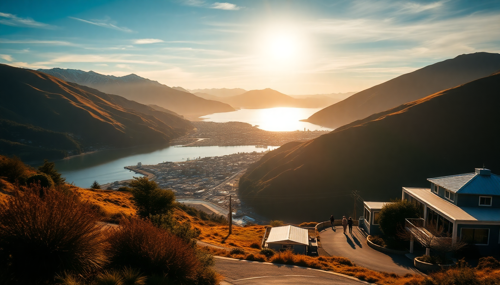

Getting Around New Zealand: Car, Campervan & Bus Tips

I landed in Auckland thinking I could wing it—just hop on a bus, figure it out. Three days later, I was elbow-deep in a rental-car contract, cursing my naivety. New Zealand’s size fools you. It’s not huge on a map, but the roads are narrow, winding, and often wet. Here’s what I learned the hard way about getting around, from the North Island’s volcanic sprawl to the South Island’s alpine switchbacks.
Should I rent a car, a campervan, or take the bus?
It depends on how much freedom you want versus how much you want to stare at a steering wheel. I tried all three. A rental car is the sweet spot for most people—you get flexibility without the hassle of emptying a chemical toilet. I picked up a Toyota Corolla from Apex Car Rentals in Auckland, and it handled the North Island fine. For the South Island, I upgraded to a small SUV because the road to Milford Sound is basically a pothole obstacle course.
A campervan is romantic until you’re parking illegally in Queenstown at 10 p.m. I rented one from Britz for a week between Christchurch and Wanaka. The freedom was real—waking up at Lake Pukaki with the sunrise—but so was the stress of finding a holiday park with power hookups every night. If you’re solo or a couple, a car plus cheap motels is easier. For families, a campervan saves money on accommodation.
The InterCity bus network is reliable between cities but useless for the backcountry. I took it from Wellington to Christchurch on the Interislander ferry (book that crossing weeks ahead—it sells out). The bus dropped me right in central Christchurch, but I couldn’t stop at Kaikoura for whale watching without my own wheels.
How do I drive New Zealand’s roads safely?
Driving here is not a vacation from driving. The State Highway 1 between Auckland and Wellington is mostly two lanes, and everyone passes on blind corners. I nearly got T-boned by a logging truck near Taupō because I forgot: keep left, always. The Desert Road section of SH1 is stunning but brutal in fog—I crawled at 40 km/h for an hour.
Key rules I learned the hard way:
- Give way to your right at intersections. It’s the opposite of the US. I almost caused a pileup in Hamilton.
- Single-lane bridges are everywhere. Check the blue sign for who yields. I reversed 50 meters once near Haast Pass because I misread it.
- Speed limits are 100 km/h max, but you’ll rarely hit it. The road to Glenorchy from Queenstown is 80 km/h of pure gravel and sheep.
- Mobile coverage dies in the mountains. Download offline maps on Google Maps or use a One NZ SIM—I bought one at the airport for $49.
What’s the best way to get around Auckland without a car?
Auckland’s traffic is a nightmare. I spent an hour crawling from the airport to the city center on a Friday afternoon. Skip the rental car here. The Auckland Link Bus runs from the Britomart Transport Centre to the suburbs cheaply, and the SkyBus from the airport to Queen Street is $18 and runs every 10 minutes. For day trips, the Fullers ferry to Waiheke Island is the highlight—I took the 9 a.m. ferry and was sipping wine at Mudbrick Vineyard by 10:30.
For inner-city exploring, walk or use Lime scooters. I zipped from Viaduct Harbour to Ponsonby Road in 15 minutes. The Auckland Domain is a 20-minute walk from downtown, but skip the Sky Tower—overpriced and the view is the same as from any hill.
How do I handle Queenstown’s parking and transport chaos?
Queenstown is a parking hell. I paid $45 for a day in a lot near The Mall and still had to walk 10 minutes. My tip: stay at a hotel with parking included. We booked The Rees Hotel on the lakefront, which had free parking and a shuttle into town. Otherwise, use the Queenstown Park & Ride at Frankton—it’s $2 and drops you at the Skyline Gondola base.
For activities, book a tour bus. I did Milford Sound with Go Orange—the bus picked me up at 7 a.m., handled the winding road, and the cruise was included. Driving yourself to Milford is stressful: the Homer Tunnel is one-way and you wait 20 minutes in a queue. For Coronet Peak skiing, the Snowline Shuttle runs from town for $20 round-trip.
What’s the best route between Wellington and Christchurch?
The Interislander ferry across the Cook Strait is the only way to get from the North Island to the South Island by land. I booked the 9 a.m. sailing from Wellington’s Interislander terminal—the crossing takes 3.5 hours. The scenery through the Marlborough Sounds is gorgeous, but the Strait is notoriously rough. I got seasick even with Dramamine. Pack ginger chews.
Once in Picton, I rented a car from Apex Picton (cheaper than Christchurch) and drove south. The Kaikōura coast is a 2-hour drive, and I stopped at Kaikōura Seafood BBQ for crayfish—cash only, worth it. The final leg to Christchurch is 2.5 hours on SH1, mostly straight and easy.
Is a campervan worth it for the South Island?
Yes, but only if you plan for freedom camping rules. I spent a week in a Britz campervan from Christchurch to Queenstown. The highlights were Lake Tekapo (I parked at the Tekapo Holiday Park for $20 a night) and Wanaka (the Wanaka Lakeview Holiday Park has hot showers and a kitchen). The Aoraki/Mount Cook area has strict no-freedom-camping zones—I got a $200 fine for parking overnight at the White Horse Hill Campground without a booking.
The downsides: driving a campervan on Crown Range Road between Queenstown and Wanaka is terrifying—it’s steep, narrow, and I had to pull over for cars three times. Also, dump stations are scarce. I used the one at Makarora and it was clogged. Renting from Jucy or Maui gives you a better support network.
How do I get around Christchurch without a car?
Christchurch is flat and bike-friendly. I rented a bike from Christchurch Bike Tours for $25 a day and cycled from the Christchurch Botanic Gardens to New Regent Street in 10 minutes. The Christchurch Tram is touristy but useful for the central city—$25 for a day pass. For the Port Hills, take the Gondola or drive—I walked up the Bridle Path and regretted it.
For longer trips, the Metro bus goes to Sumner Beach (route 3) and Lyttelton (route 28). I took the bus to Lyttelton Farmers Market on a Saturday—best fresh bread and coffee I had in New Zealand.
FAQ
Is it safe to drive New Zealand in winter? Yes, but you need chains. I drove from Christchurch to Queenstown in July and hit black ice near Arthur’s Pass. Rental companies provide chains, but practice putting them on in a parking lot before you need them on a mountain road. Avoid driving after dark—roads freeze and wildlife (possums, sheep) wander onto the asphalt.
Can I use Uber in New Zealand? Uber works in Auckland, Wellington, Christchurch, and Queenstown, but it’s expensive. I paid $45 for a 15-minute ride from Queenstown Airport to town. Local taxis are similar. For cheaper rides, use the Snapper app in Wellington or the Bee Card for buses in Christchurch.
Do I need a rental car for the entire trip? No. I used a car for the South Island and buses for the North Island. In Auckland, I relied on the SkyBus and ferries. In Queenstown, I parked at the hotel and walked. Mix and match based on where you’re staying—I saved $300 by not renting a car in Wellington.
Conclusion
- Rent a car for the South Island; use buses and ferries for the North Island.
- Book the Interislander ferry weeks ahead and pack seasickness meds.
- Avoid Queenstown parking by staying at a hotel with a lot or using the Park & Ride.
- Download offline maps—cell service dies in the mountains.
- Campervans are fun but stick to holiday parks to avoid fines.